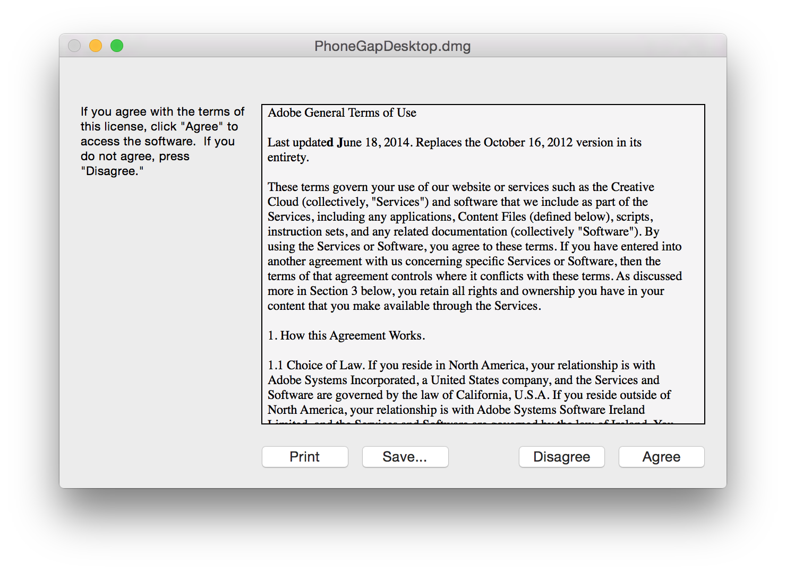
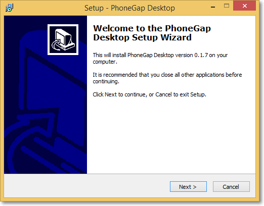
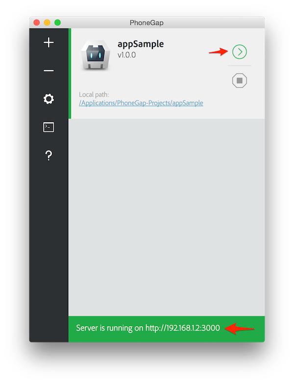

Tutorial
To start using it you need to install the phonegap desktop application which provides a drag and drop interface for creating the apps, to do this you need to download the installer for your operational system, when the download is done if you are using Mac OS X double click the downloaded file to run the installer, you will initially be prompted with a license agreement to accept.
Then drag and drop the application into the “Applications” folder on your Mac as prompted.
In case you are not using Mac but instead you are using Windows, double click the downloaded file to run the installer, you will be prompted with the PhoneGap Desktop Setup Wizard, accept the license agreement.
Select the desired destination for the application and click Next, select the desired location for the shortcut and click Next, click Install to begin installation and click Finish to close the Setup Wizard.
To preview and test the applications without additional platform SDK setup on your mobile you will need to download The PhoneGap Developer App. It automatically provides access to the PhoneGap core APIs providing instant access to the native device features without having to install any plugins or compile anything locally. It’s meant to provide ab easy way for developers to get started creating and testing their PhoneGap applications quickly with minimal setup. To install the free Phonegap developer app from one of the following supported app marketplaces(ITunes | Google play | Windows Phone Store).

Once installed, tap the PhoneGap Developer app icon from your home screen to open it.
Now that you’ve installed PhoneGap Desktop and/or PhoneGap CLI to your computer or your mobile device. This project will be a mobile app with the ability to run on multiple devices and across operating systems.
The PhoneGap desktop tools include a default Hello World project for beginners to start with. Click the plus sign and select Create New Project PhoneGap Project, you will be presented with a screen to enter information about your project. Choose the path on your local hard drive where you want to create the project, a designated name and an optional identifier. Once the information has been entered, click the green Create project button (Be aware that the ID field is also known as the package identifier for Android and the bundle identifier for iOS). You should see a server address indicating it's running and the active project. Only one project will be active and running at any time.
You can use the PhoneGap Developer App paired with PhoneGap Desktop to immediately preview your app on a device without installing platform SDKs, registering devices, or compiling code.
PhoneGap Desktop starts a small web server to host your project and returns a server address you can then enter into the PhoneGap Developer app running on your mobile device or in your desktop browser. The project is served automatically upon project creation, but you can also manually start any project that's inactive by clicking the green play ( > ) button next to it.
To preview your application go to your mobile device where the PhoneGap app is running, enter the server address on the main screen and tap Connect, you should connect and see a success message. If you receive an error of any kind, be sure that you are connected to the same network on both your device and computer. Once connected it will load and show your application.

To make an update open up the index.html file(located on ~/name/www/index.html) on your text editor, edit something save and go to your mobile device to see the result.